Visualising data
Course web site
This is a link to the course web site, in case you need to go back and forth between tutorial and web materials: http://dmac.netlify.com
Overview
- Grammar of graphics: Elements of a data plot
- Example: tb
- Common types of GEOMS
- Scales, transformations
- Facets: comparing subsets
Elements of a data plot
- data
- mapping of variables to graphical elements (aesthetics)
- type of plot structure to use (geom)
- transformations: log scale, …
and …
- layers: multiple geoms, multiple data sets, annotation
- facets: show subsets in different plots
- themes: modifying style
Why use a grammar of graphics?
- Remember tidy data?
- Data is organised into variables and observations.
- With a grammar, the variables are directly mapped to an element in the plot
- It is also possible to see how one display is similar or different from another, rather than thinking of plots like animals in a zoo, specific beasts (pie chart, barchart, scatterplot, …)
Elements of the grammar
ggplot(data = <DATA>) +
<GEOM_FUNCTION>(
mapping = aes(<MAPPINGS>),
stat = <STAT>,
position = <POSITION>
) +
<COORDINATE_FUNCTION> +
<FACET_FUNCTION>The 7 key elements of the grammar are:
- DATA
- GEOM_FUNCTION
- MAPPINGS
- STAT
- POSITION
- COORDINATE_FUNCTION
- FACET_FUNCTION
Example: Tuberculosis data
This is current tuberculosis data taken from WHO, the case notifications table.
library(tidyverse)
tb <- read_csv("data/TB_notifications_2018-03-18.csv") %>%
select(country, iso3, year, new_sp_m04:new_sp_fu) %>%
gather(stuff, count, new_sp_m04:new_sp_fu) %>%
separate(stuff, c("stuff1", "stuff2", "genderage")) %>%
select(-stuff1, -stuff2) %>%
mutate(gender=substr(genderage, 1, 1),
age=substr(genderage, 2, length(genderage))) %>%
select(-genderage)
tb_au <- tb %>%
filter(country == "Australia") %>%
filter(!(age %in% c("04", "014", "514", "u"))) %>%
filter(year > 1996, year < 2013)ggplot(tb_au, aes(x = year, y = count, fill = gender)) +
geom_bar(stat = "identity", position = "fill") +
facet_grid(~ age) +
scale_fill_brewer(palette="Dark2")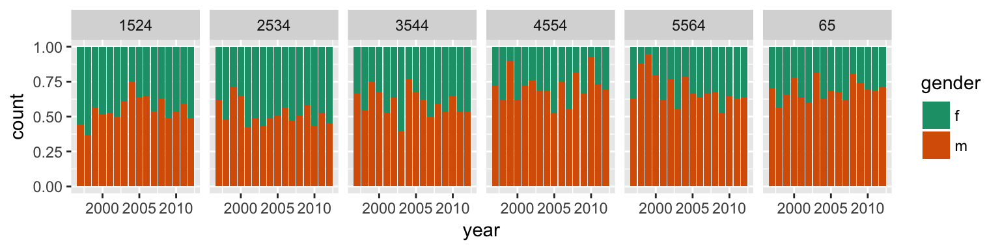
100% charts, is what excel names these beasts. What do we learn?
- Focus is on proportion in each category.
- Across (almost) all ages, and years, the proportion of males having TB is higher than females
- These proportions tend to be higher in the older age groups, for all years.
Bar charts
ggplot(tb_au, aes(x = year, y = count, fill = gender)) +
geom_bar(stat = "identity") +
facet_grid(~ age) +
scale_fill_brewer(palette="Dark2")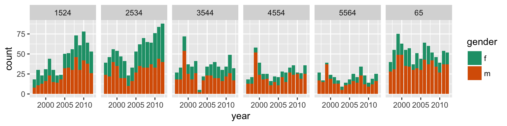
What do we learn?
- Focus is on counts in each category.
- Different across ages, and years, counts tend to be lower in middle age (45-64)
- 1999 saw a bit of an outbreak, in most age groups, with numbers doubling or tripling other years.
- Incidence has been increasing among younger age groups in recent years.
Side-by-side barcharts
ggplot(tb_au, aes(x = year, y = count, fill = gender)) +
geom_bar(stat = "identity", position="dodge") +
facet_grid(~ age) +
scale_fill_brewer(palette="Dark2")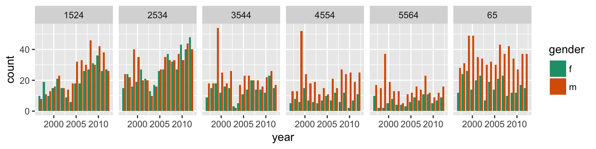
What do we learn?
- Focus is on counts by gender, predominantly male incidence.
- Incidence among males relative to females is from middle ag on. There is similar incidence between males and females in younger age groups.
Separate bar charts
ggplot(tb_au, aes(x = year, y = count, fill = gender)) +
geom_bar(stat = "identity") +
facet_grid(gender ~ age) +
scale_fill_brewer(palette="Dark2")
What do we learn?
- Its easier to focus separately on males and females.
- The 1999 outbreak mostly affected males.
- The growing incidence in the 25-34 age group is still affecting females but seems to be have stablised for males.
Pie charts?
ggplot(tb_au, aes(x = year, y = count, fill = gender)) +
geom_bar(stat = "identity") +
facet_grid(gender ~ age) +
scale_fill_brewer(palette="Dark2") +
coord_polar() +
theme(axis.text = element_blank())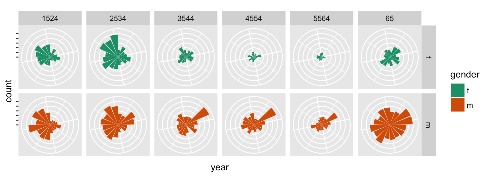
Nope! That’s a rose chart. Bar charts in polar coordinates produce rose charts.
What do we learn?
- Emphasizes the middle years as low incidence.
Rainbow charts?
ggplot(tb_au, aes(x = 1, y = count, fill = factor(year))) +
geom_bar(stat = "identity", position="fill") +
facet_grid(gender ~ age) 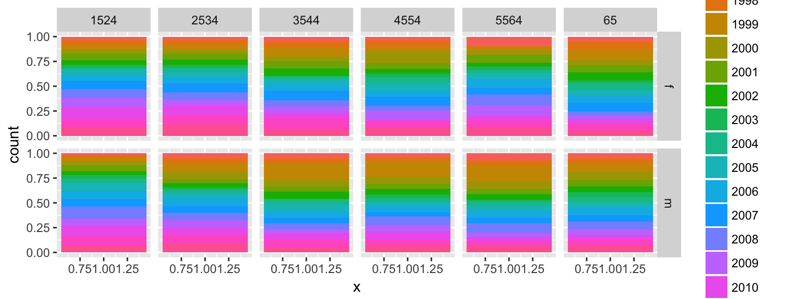
A single stacked bar, in each facet. Year is mapped to colour.
What do we learn?
- Pretty chart but not easy to interpret.
Pie charts
ggplot(tb_au, aes(x = 1, y = count, fill = factor(year))) +
geom_bar(stat = "identity", position="fill") +
facet_grid(gender ~ age) +
coord_polar(theta="y") +
theme(axis.text = element_blank())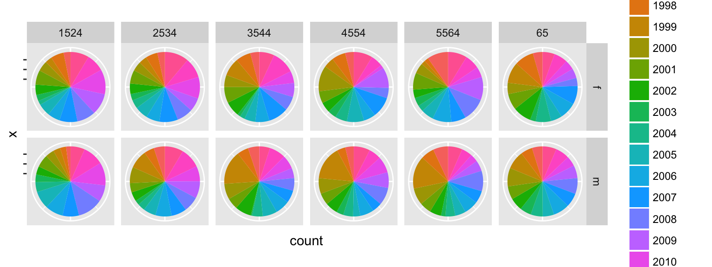
What do we learn?
- Pretty chart but not easy to interpret, or make comparisons across age groups.
Quiz
Common types of GEOMS
- point, smooth
- line, path, segment, hline, vline
- bar, col
- boxplot, violin, errorbar
- density, density2d, contour, polygon, hexbin
- text
Examples: point, smooth
Basic scatterplot
pisa_au <- read_csv("data/pisa_au_sub.csv")
ggplot(data=pisa_au, aes(x=math, y=read)) + geom_point()
What do we learn?
- Strong positive linear association
- No real outliers
- A student who scores well in math tends to also score well in reading
Overlaying a model fit
ggplot(data=pisa_au, aes(x=math, y=read)) +
geom_point() + geom_smooth()
By default, this overlays a “loess smoother”. This is constructed by taking a window on the horizontal axis and computing a linear fit on the subset of points, roll the window along to the right, re-calculate the fit, then combine fitted y values from the previous window, keep going until the end. You can read more about the loess smoother on wikipedia.
The smoother is more general because it captures non-linear relations. For this data a simple linear model is sufficient to summarise the relationship.
ggplot(data=pisa_au, aes(x=math, y=read)) +
geom_point() + geom_smooth(method="lm")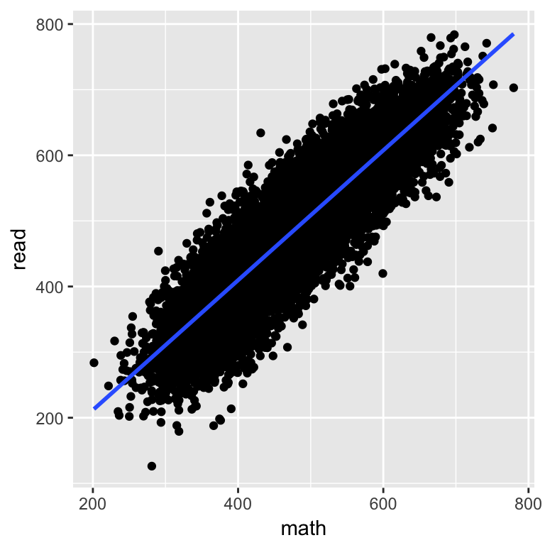
What do we learn?
- Not much more than the scatterplot alone,
- except we can eyeball the model and make statements like “on average students who score 400 on math, score 400 on reading”
Examples: line, path, segment, abline, hline, vline
lines
Lines connect consecutive x values
rates <- read_csv("data/rates.csv")
ggplot(data=rates, aes(x=date, y=AUD)) +
geom_point() + geom_line()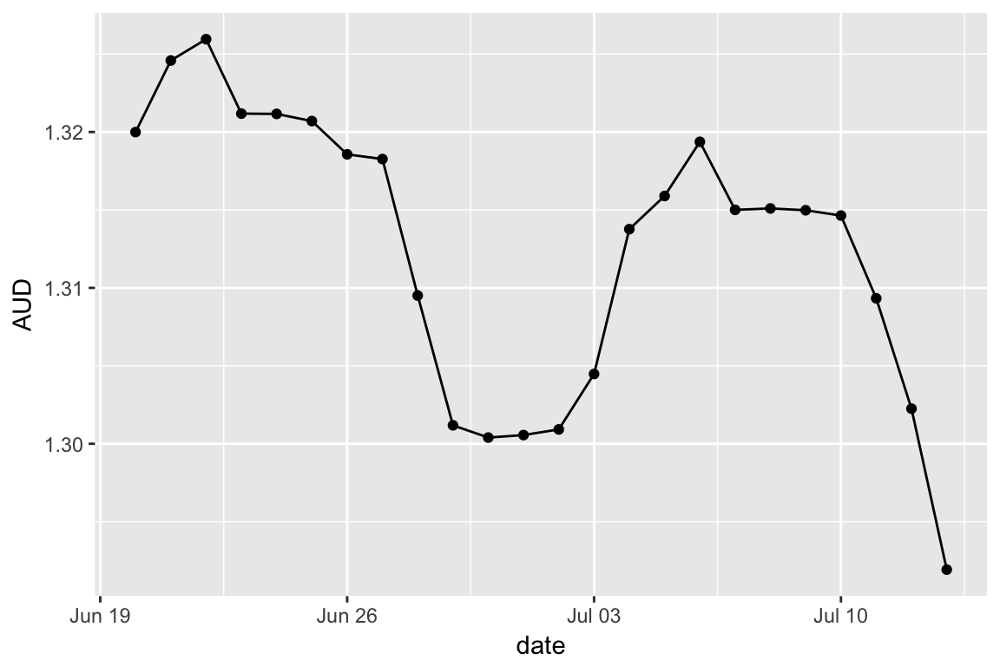
What do we learn?
- Between Jun 19 and Jul 13, 2017, you needed between 1.28 and 1.33 AUD to buy a USD.
- It peaked Jun 22, and was lowest at the end of the period.
paths
Paths connect consecutive rows in the data
ggplot(data=rates, aes(x=AUD, y=NZD)) +
geom_point() + geom_line()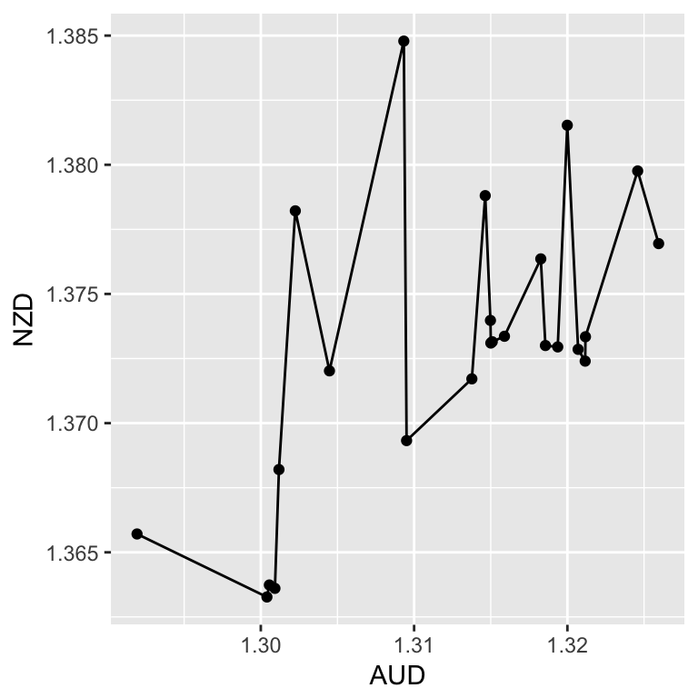
ggplot(data=rates, aes(x=AUD, y=NZD)) +
geom_point() + geom_path() +
theme(aspect.ratio=1)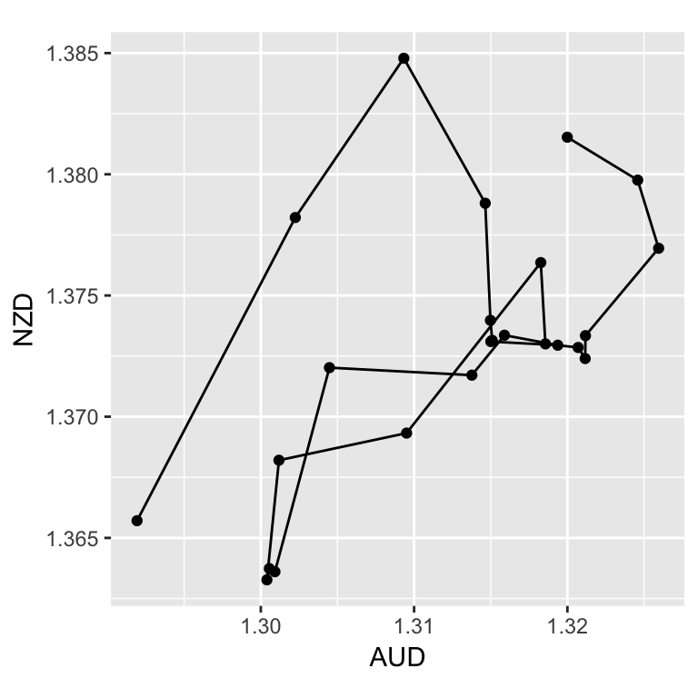
abline, hline, vline
These are useful to provide guides underneath the data.
ggplot(data=rates, aes(x=AUD, y=NZD)) +
geom_point() + geom_path() +
geom_abline(intercept=0, slope=1, colour="white", size=3) +
xlim(c(1.28,1.39)) +
ylim(c(1.28,1.39)) 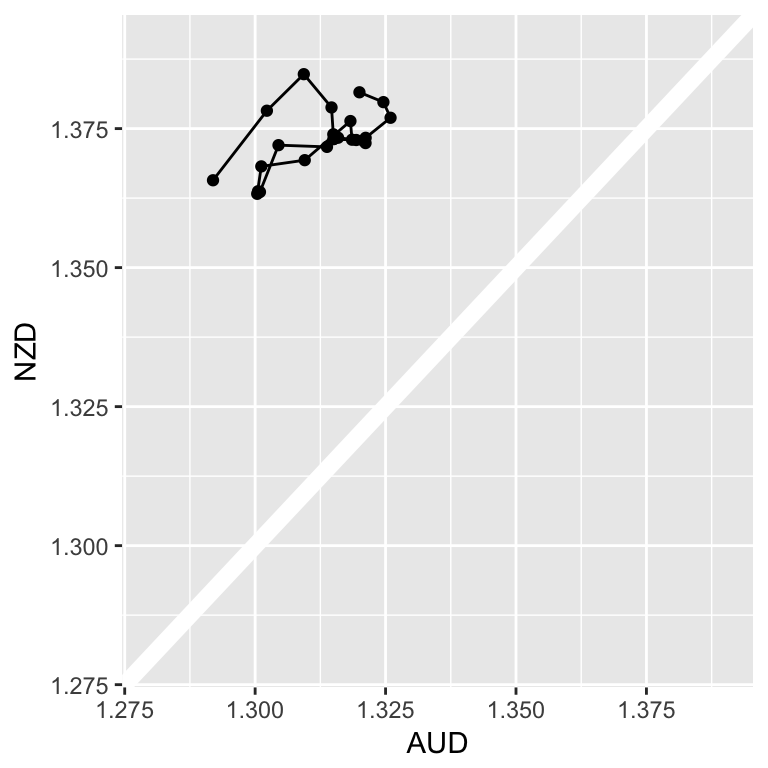
What do we learn?
- The NZD was always worth less than the AUD during this time.
boxplot, violin, errorbar
library(forcats)
pisa_au <- pisa_au %>%
mutate(birthmonth=factor(birthmonth,
levels=c("jan", "feb", "mar", "apr", "may", "jun", "jul", "aug", "sep", "oct", "nov", "dec")))
ggplot(data=pisa_au, aes(x=birthmonth, y=science)) +
geom_boxplot()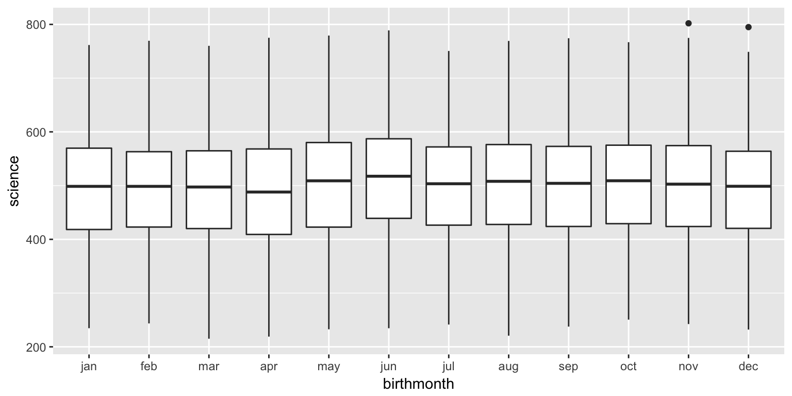
What do we learn?
- Science scores are quite similar between birth months. It looks like there might be some slightly higher medians of teenagers born in May and June.
Violin
Violin plots show the full density of the data, rather than just the key numbers (min, max, Q1, Q3, median). Can be a useful comparison if there is, e.g. bimodality in the values.
ggplot(data=pisa_au, aes(x=birthmonth, y=science)) +
geom_violin(fill="orange", draw_quantiles=c(0.25, 0.5, 0.75)) 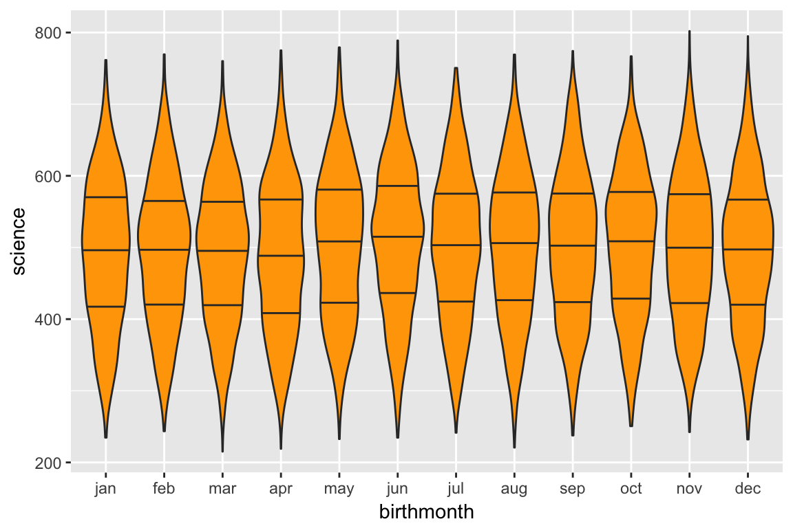
What do we learn?
- Very similar, very regular distribution of scores for each year.
- Maybe its harder to see any difference between
Letter value plots
An extension of standard boxplots (essentially the five number summary) that shows any number of quantiles. There is a really nice explanation of how they are created by Manny Gimond
library(lvplot)
ggplot(data=pisa_au, aes(x=birthmonth, y=science)) +
geom_lv(aes(fill = ..LV..), k=6) 
Is it real?
It looks like May and Jun have slightly higher median science scores. Is this really possible? Why might it occur?
Suppose its not real. What if we pretended we did not know the true birthmonth. Take the current labels and scramble them, and re-draw the boxplot.
pisa_au_scramble <- pisa_au %>%
mutate(birthmonth = sample(birthmonth))
ggplot(data=pisa_au_scramble, aes(x=birthmonth, y=science)) +
geom_boxplot()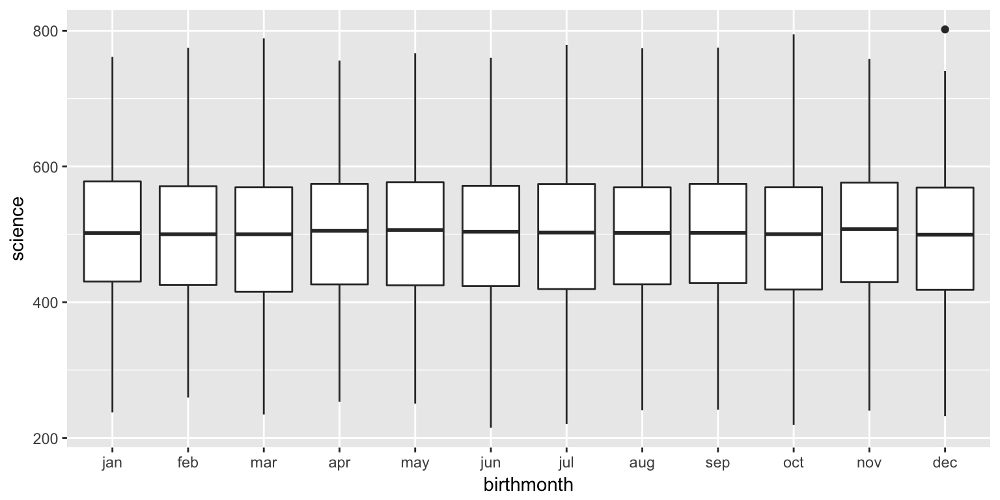

density, density2d, contour, polygon, hexbin
hexbin
With lots of data, areas of high density can be obscured. It may be better to bin the data into chunks and display the count.
ggplot(data=pisa_au, aes(x=math, y=read)) +
geom_point()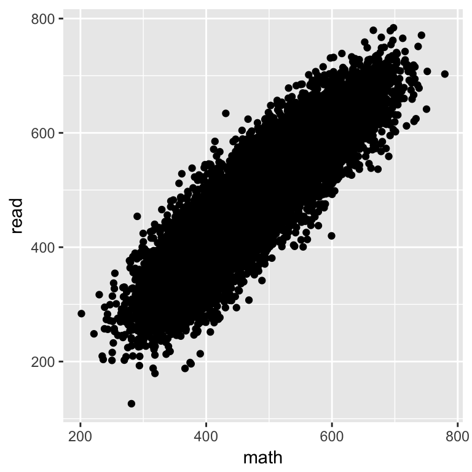
library(viridis)
ggplot(data=pisa_au, aes(x=math, y=read)) +
geom_hex() +
scale_fill_viridis()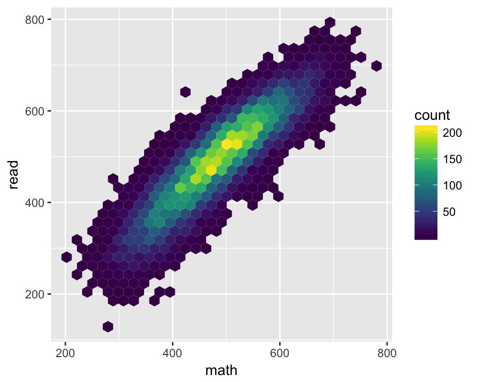
What do we learn?
- There are substantially more counts in the centre of the data
1d density
ggplot(data=pisa_au, aes(x=anxtest)) +
geom_histogram(fill="black", alpha=0.5) 
ggplot(data=pisa_au, aes(x=anxtest)) +
geom_density(fill="black", alpha=0.5) 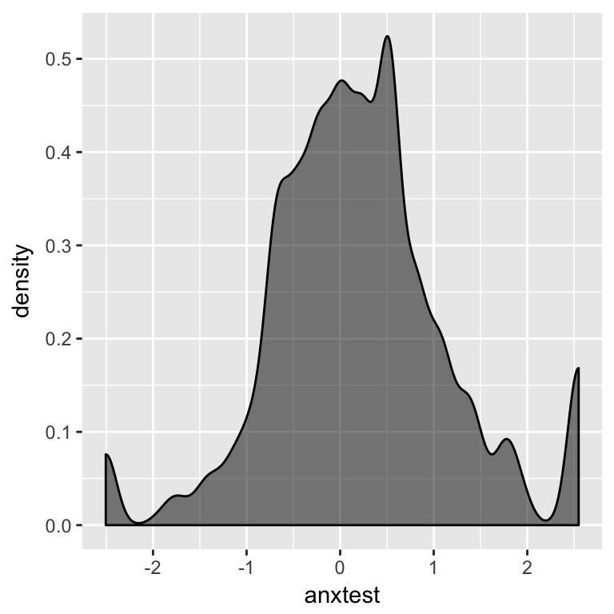
A histogram is a “rough” density plot. Observations are binned, and the count of values in each bin is mapped to height of the bar. You can make the plot smoother by increasing the bin size.
library(gridExtra)
p1 <- ggplot(data=pisa_au, aes(x=anxtest)) +
geom_histogram(fill="black", alpha=0.5)
p2 <- ggplot(data=pisa_au, aes(x=anxtest)) +
geom_histogram(fill="black", alpha=0.5, binwidth=0.5)
p3 <- ggplot(data=pisa_au, aes(x=anxtest)) +
geom_histogram(fill="black", alpha=0.5, binwidth=0.1)
grid.arrange(p1, p2, p3, ncol=3)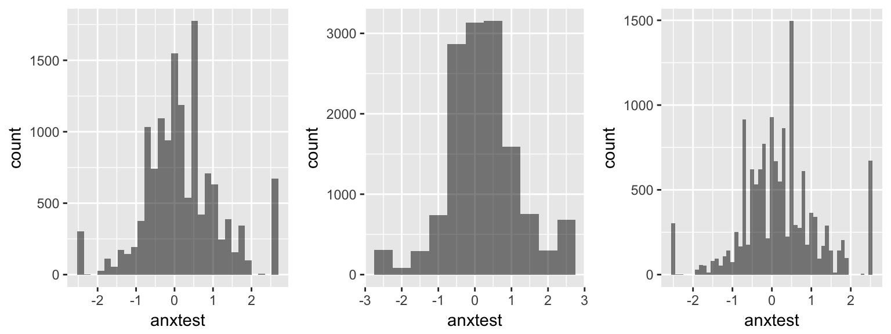
A density plot smooths the bins. It can also be made smoother by increasing the bin size.
p1 <- ggplot(data=pisa_au, aes(x=anxtest)) +
geom_density(fill="black", alpha=0.5)
p2 <- ggplot(data=pisa_au, aes(x=anxtest)) +
geom_density(fill="black", alpha=0.5, bw=0.5)
p3 <- ggplot(data=pisa_au, aes(x=anxtest)) +
geom_density(fill="black", alpha=0.5, bw=0.1)
grid.arrange(p1, p2, p3, ncol=3)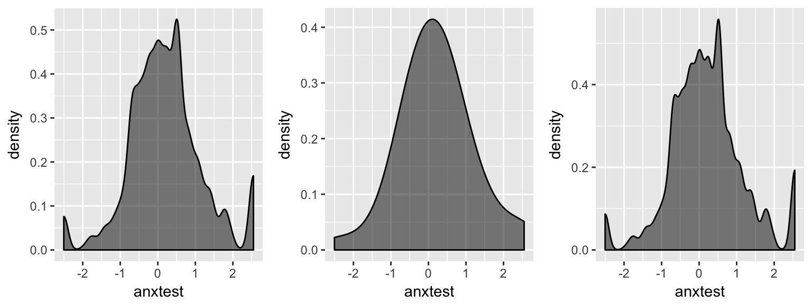
Transformations
To examine if science score is related to time spend learning science, we have plotted the two variables. Time learning science is given in minutes per week.
ggplot(data=pisa_au,
aes(x=science_time, y=science)) +
geom_point() 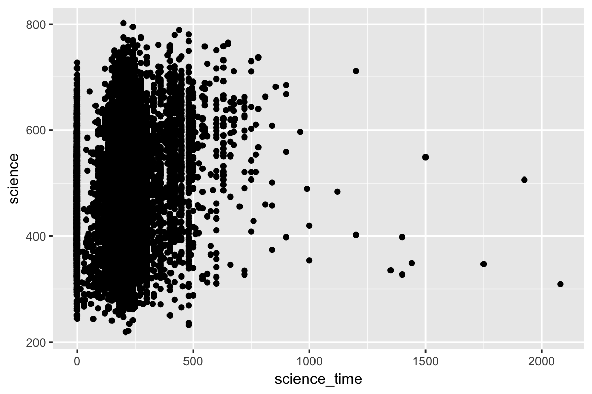
Distributions can be described of variables are described as - skewed (right or left) or symmetric, - unimodal, bimodal or multimodal, - or uniform - any of these could also have “outliers”
Time learning science has a skewed right distribution, also with possible outliers. This means that most students report relatively low numbers, and there are fewer reporting high numbers.
Take a look at the numeric summary of science time, and we would see the middle 50% of students report between 180 and 240 minutes of study. (That is, 3-4 hours per week.)
library(skimr)
pisa_au %>% select(science_time) %>% skim()Its hard to assess the association between variables when one or both are skewed. So it is best to transform them, to “symmetrise” the distribution. For a skewed right distribution, consider a “log”, or a fractional power like “sqrt”.
ggplot(data=pisa_au,
aes(x=science_time, y=science)) +
geom_point() +
scale_x_log10()
What do we learn?
- There is vertical striping in the plot. This means that numbers are reported on a discrete scale.
- The association between the two variables is quite weak, but appears to be positive and linear.
ggplot(data=filter(pisa_au, science_time>0),
aes(x=science_time, y=science)) +
geom_point() +
scale_x_log10() +
geom_smooth(method="lm")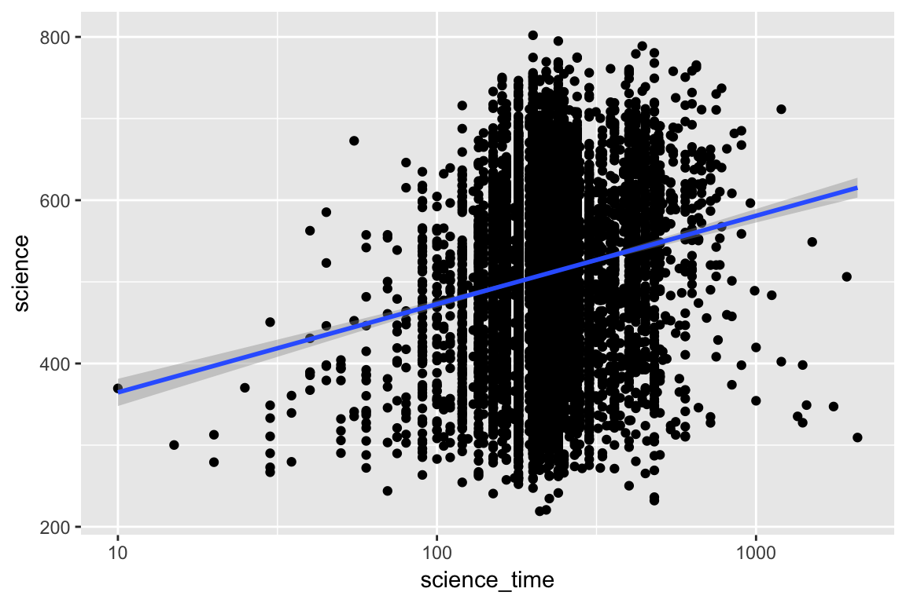
Fitting a linear model (to times above 0) indicates that on average science scores do go up as learning time increases.
Common descriptions of associations between two variables are:
- direction: positive or negative
- strength: weak, moderate, strong
- form: linear, non-linear (e.g. curved, clustered). Form can be hard to report if the relationship is weak.
- outliers can exist with any other descriptions
There are many different scale functions in ggplot2, to
- transform the x-, y-axis scale, set limits, add titles, or to display dates
- change the colour or fill scale, primarily palette to use
- size of plot elements
Facets: comparing subsets
Categorical variables create partitions in the data. It is often useful and important to compare and contrast these subsets.
There is a choice of using colour or symbol to indicate sub-group, or split the subsets apart into facets.
Side-by-side boxplots are an example of (simple) facets.
The choice of colouring or facetting depends on the primary comparisons that need to be made, and the difference between.
library(rwalkr)
ped <- walk_melb(from=dmy("01022018"),
to=dmy("28022018"))
ped <- ped %>%
filter(Sensor %in% c("Melbourne Central", "Flinders Street Station Underpass"))
save(ped, file="data/ped_Feb18.rda")Here are the Melbourne pedestrian counts for February 2018, with two locations overlaid and mapped to colour.
library(lubridate)
load("data/ped_Feb18.rda")
ggplot(ped) +
geom_line(aes(x=Date_Time, y=Count, colour=Sensor)) +
scale_colour_brewer(palette="Dark2") +
theme(legend.position="bottom")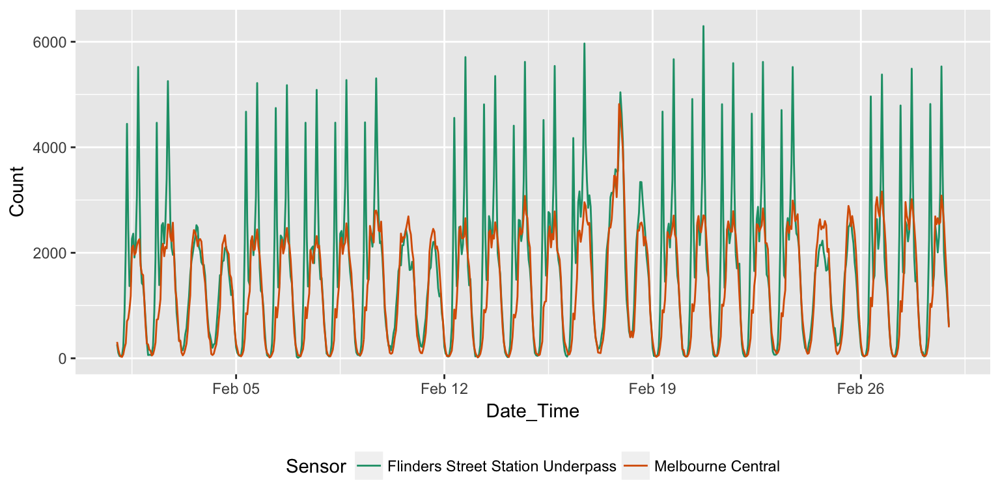
What do we learn?
- Counts at Flinders are higher at many times than at Melbourne Central
- Feb 17 had unusual counts. Why?
ped <- ped %>%
mutate(week = week(Date),
wday = wday(Date, label=TRUE, abbr=TRUE,
week_start=1))
ggplot(ped) +
geom_line(aes(x=Time, y=Count, colour=Sensor)) +
scale_colour_brewer(palette="Dark2") +
theme(legend.position="bottom") +
facet_grid(week~wday)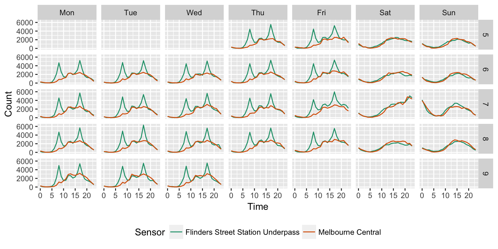
What do we learn?
- On week days Flinders sees peak pedestrian traffic at morning and evening rush hours.
- On weekends, they are really quite similar numbers
- Saturday night into Sunday morning on the third week of the month, there were unusually high numbers of people around. That would be “White Night”!
- There is also a small lunch time bump in numbers at both locations on week days.
- There is no-one walking around either location between midnight and 5am.
General rules:
- Overlay, if differences are small, and you have few groups
- Facet, if differences are big, and you have many groups
Lab exercise
These are all from the textbook:
- 3.3.1 1, 5, 6
- 3.5.1 1, 4, 5
- 3.6.1 1, 2, 4, 5, 6
- 3.7.1 1, 2, 4
When you are done, take the lab exercise quiz on ED.
Share and share alike

This work is licensed under a Creative Commons Attribution 4.0 International License.